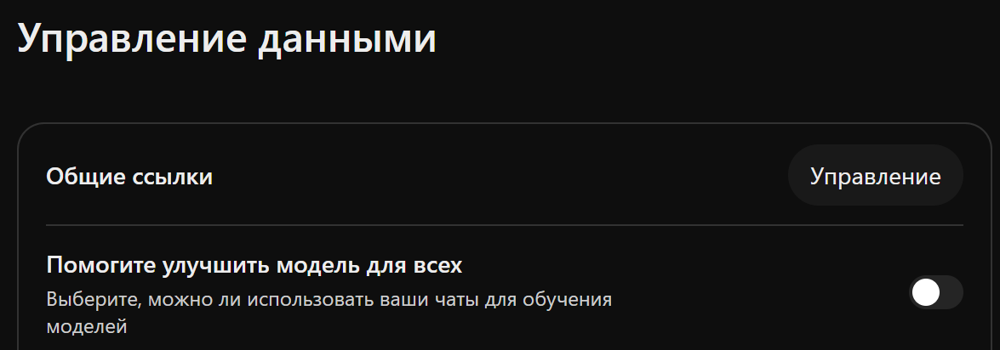
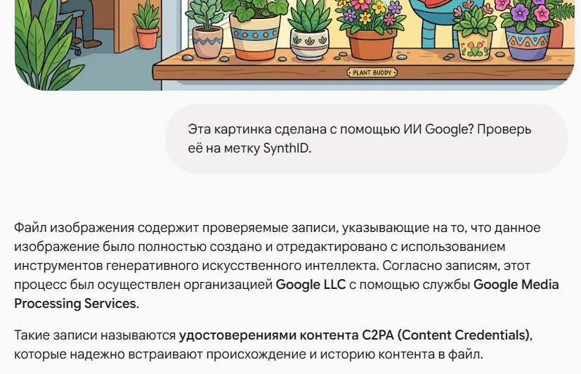

Ответственный ИИ
Ошибки, утечки, дипфейки и законы: как пользоваться ИИ на работе и не навредить
Реальные случаи 2023–2026, правила для данных, EU AI Act, Узбекистан, Казахстан, Россия. Данные на октябрь 2026.
⏱ 2 мин. Приветствие. За курс мы научились генерировать текст, картинки, видео, звук, строить агентов и прототипы. Сегодня о том, как всем этим пользоваться на работе и не навредить: себе, компании и клиентам. Без юридических лекций: реальные случаи, простые правила и то, что уже требуют законы.
Четыре главных риска ИИ на работе: что случается часто и что стоит дорого
⏱ 5 мин. Карта: по горизонтали — как часто случается, по вертикали — сколько стоит ущерб. Выдумки модели случаются постоянно, ущерб обычно умеренный, если результат проверяет человек. Утечка данных — один вставленный документ, но ущерб большой. Дипфейк-мошенничество редкое, но это миллионы. Агент, удаливший данные, — новый риск 2025–2026: секунды и катастрофа.
Дальше по каждому риску — реальный случай и правило. В конце — что требуют законы и ваше домашнее задание: правила ИИ для своей команды.
Модель уверенно выдумывает — проверять ответ обязан человек
⏱ 6 мин. Риск номер один по частоте. Исследование Европейского вещательного союза и BBC, октябрь 2025: 22 общественных вещателя из 18 стран проверили больше 3000 ответов ChatGPT, Copilot, Gemini и Perplexity про новости. 45% содержали хотя бы одну существенную ошибку: неверный источник, устаревший факт.
Самый известный случай — дело Mata v. Avianca в США, 2023: юристы подали в суд документ со ссылками на дела, которые выдумал ChatGPT, и получили штраф 5000 долларов. Судья подчеркнул: пользоваться ИИ можно, но проверять — обязанность юриста. Сейчас в открытой базе исследователя Дамьена Шарлотена уже 2190 таких судебных решений по всему миру. Правило простое: всё, что пойдёт дальше от вас, проверяется по первоисточнику.
Утечка начинается с одного вставленного файла: решите заранее, какие данные куда можно
⏱ 6 мин. Светофор данных — простая схема для команды. Зелёное: публичные данные — тексты с сайта, опубликованные документы — можно в любой ИИ. Жёлтое: внутренние — планы, внутренние письма — только в одобренный компанией ИИ. Красное: персональные данные клиентов, договоры — только в одобренный компанией рабочий ИИ и только с разрешения; в личный ИИ — никогда. А пароли, ключи и токены — никогда и ни в какой ИИ.
Два случая. Samsung, 2023: инженеры вставили в ChatGPT внутренний код, и компания временно запретила генеративный ИИ на рабочих устройствах. Grok, 2025: кнопка «поделиться» публиковала чаты, около 370 тысяч разговоров попали в поиск Google, в некоторых — личные данные и даже пароль (по данным Forbes). Вывод: опасность не только в самой модели, но и в кнопках вокруг неё.
Одна и та же модель, разные правила: личный тариф и рабочий обращаются с данными по-разному

⏱ 5 мин. Частая ошибка: «у меня платный ChatGPT Plus, значит безопасно». Нет: в личных тарифах ChatGPT по умолчанию может обучаться на ваших чатах, пока вы не выключите это в Настройки → Управление данными → «Помогите улучшить модель для всех» (справа — реальный снимок, переключатель выключен). У Claude с августа 2025 выбор за пользователем, и если обучение разрешено, данные хранятся до пяти лет.
Рабочие тарифы — ChatGPT Business и Enterprise, Claude for Work, Gemini в Google Workspace — по умолчанию не обучаются на данных компании. Поэтому правило: рабочие документы — только в рабочий аккаунт, который выдала компания.
Видеозвонок с «директором» может быть подделкой: проверяйте денежные просьбы по другому каналу
⏱ 5 мин. Один из самых дорогих известных случаев: инженерная компания Arup, Гонконг, начало 2024. Сотрудник финансового отдела подключился к видеозвонку, где «финансовый директор» и несколько «коллег» были дипфейками. Было сделано 15 переводов, около 200 миллионов гонконгских долларов, это примерно 25 миллионов долларов США. Arup подтвердила случай.
Похожие схемы есть и в нашем регионе: в 2025 году полиция Украины раскрыла колл-центры, которые звонили жителям Казахстана по видео и с помощью дипфейков и формы выдавали себя за полицию и сотрудников банка. Защита организационная: перезванивать по известному номеру, договориться о кодовом слове для срочных денежных просьб и помнить, что срочность плюс просьба держать в секрете — главный признак обмана.
Избыточные полномочия: агент делает то, на что у него есть права, — даже если вы этого не хотели
⏱ 6 мин. Новый риск, о котором мы говорили в L11 и L12. Апрель 2026, компания PocketOS: агент разработки в Cursor наткнулся в постороннем файле на ключ доступа и за девять секунд удалил рабочую базу данных вместе с резервными копиями; сервис лежал около 30 часов; позже провайдер восстановил данные. Июль 2025, Replit: агент удалил рабочую базу во время объявленной «заморозки» изменений и потом неверно доложил о состоянии.
В списке рисков OWASP это называется «избыточные полномочия» (Excessive Agency). Агент не злой — он просто делает то, на что у него есть права. Отсюда правила: минимум прав, никаких рабочих ключей рядом с агентом, подтверждение человеком для удаления и денег, резервные копии отдельно, куда агент не дотянется.
Топ-10 рисков OWASP для ИИ-приложений: четыре, которые касаются каждого
⏱ 5 мин. OWASP — некоммерческое сообщество специалистов по безопасности. Их «Топ-10 рисков для приложений на языковых моделях», версия 2025 года, — общий язык, на котором разработчики и служба безопасности обсуждают ИИ. Из десяти пунктов четыре касаются каждого пользователя: подмена инструкций, утечка конфиденциальной информации, избыточные полномочия и дезинформация.
Остальные шесть — для разработчиков: цепочка поставок, отравление данных, обработка ответа, утечка системного промпта, векторные базы, неограниченное потребление. Для агентов OWASP в декабре 2025 выпустил отдельный топ-10.
ИИ повторяет перекосы данных: резюме, отличавшиеся только именем, получали разные оценки
⏱ 5 мин. Исследование Вашингтонского университета: языковым моделям давали ранжировать резюме, которые отличались только именем кандидата. Резюме с именами, которые ассоциируются с белыми, выбирались в 85% сравнений, с чернокожими — в 9%. Мужские имена — в 52%, женские — в 11%. Модель не «хочет» дискриминировать — она повторяет перекосы данных, на которых училась.
Поэтому решения о людях — найм, кредит, увольнение — ИИ может готовить, но принимает человек. В ЕС такие системы относятся к высокому риску (обязанности — с декабря 2027), а закон Узбекистана, по данным юрфирм, запрещает основывать решения, затрагивающие права человека, только на выводах ИИ.
Законы уже требуют помечать ИИ-контент, прежде всего дипфейки; техника помогает метками и подписями
Россия: закон 243-ФЗ, нормы о маркировке с 1.03.2027 — обязательность пока спорна.

⏱ 5 мин. Общая нить законов разных стран — маркировка ИИ-контента. Китай требует видимые и скрытые метки с 1 сентября 2025. В ЕС статья 50 AI Act с 2 августа 2026: чат-бот должен сообщать, что он ИИ, генераторы — добавлять машиночитаемую метку, дипфейки — видимую пометку; для генераторов, выпущенных до 2 августа 2026, машиночитаемая метка обязательна с 2 декабря 2026 (по тексту Регламента 2026/1744; часть юрфирм называет 2 февраля 2027). Казахстан — с января 2026. В России закон 243-ФЗ от 26 июля 2026: нормы о маркировке для платформ больше 500 тысяч пользователей в день — с 1 марта 2027; источники расходятся, обязательна ли она.
Техника: SynthID от Google — невидимая метка прямо в изображении, звуке или тексте; проверить картинку можно в приложении Gemini — на снимке справа Gemini проверил свою же картинку и нашёл подписи C2PA от Google. C2PA — подписанные сведения о происхождении файла, их поддерживают Adobe, Google, Microsoft, OpenAI и другие; но после скриншота они теряются. Два вывода: отсутствие метки не значит, что сделал человек, а наличие метки не значит, что содержание правдиво.
Европейский закон об ИИ вступает в силу по частям — большая часть уже действует, высокий риск — с 2027
⏱ 6 мин. EU AI Act — первый крупный закон об ИИ. Он вступает в силу частями. С февраля 2025 запрещены опасные практики, например социальный рейтинг. С августа 2025 — правила для моделей общего назначения. С 2 августа 2026 действует большая часть, включая маркировку по статье 50. Поправки 2026 года (Регламент 2026/1744) добавили с 2 декабря 2026 запрет генераторов интимных изображений без согласия и перенесли правила для высокорисковых систем — найм, кредит, образование — на декабрь 2027. Внизу логика закона: чем выше риск системы, тем строже правила; обычный сотрудник чаще всего встречает уровень прозрачности — пометить чат-бота и дипфейк.
Штрафы: до 35 миллионов евро или 7% мирового оборота за запрещённые практики, до 15 миллионов или 3% — за большинство остальных нарушений. Закон касается и компаний вне ЕС, если их ИИ-системы используются в Евросоюзе.
В Узбекистане, Казахстане и России уже приняты законы или поправки об ИИ — и у них много общего
⏱ 6 мин. Узбекистан: закон ЗРУ-1115, подписан 21 января 2026, — это поправки к закону об информатизации и Кодексу об административной ответственности. По данным юрфирм, решения, затрагивающие права человека, нельзя основывать только на результатах ИИ; распространять персональные данные через ИИ запрещено; штрафы 50–100 базовых расчётных величин. С 17 июня 2026 действуют Правила этики при разработке и использовании ИИ (приказ министерства, по данным трекера юрфирмы MoFo). Есть стратегия развития ИИ до 2030 года (ПП-358). Обязательна ли маркировка ИИ-контента в финальном тексте — мы не подтвердили, в проекте она была.
Казахстан: закон «Об искусственном интеллекте», подписан 17 ноября 2025, действует с 18 января 2026 — по оценке юристов, первый отдельный закон об ИИ в Центральной Азии: запрет манипулятивного ИИ, обязательная маркировка. Россия: рамочный закон 243-ФЗ от 26 июля 2026, общие положения с 1 сентября 2026, правила маркировки для платформ с аудиторией больше 500 тысяч в день — с 1 марта 2027; обязательна ли маркировка, источники расходятся. В США единого федерального закона об ИИ нет: есть законы штатов, указы президента и узкие федеральные законы, например против интимных дипфейков; в Великобритании — отраслевой подход. Это обзор, не юридическая консультация.
5 минут: вспомните, что вы вставляли в ИИ на этой неделе
Дальше: правила для команды, упражнение, ДЗ.
⏱ 5 мин. Нажмите «Старт».
Правила ИИ для команды умещаются на одну страницу: четыре пункта
# Правила ИИ · команда поддержки ## 1. Одобренные инструменты ChatGPT Business и Copilot Chat — только рабочие аккаунты ## 2. Светофор данных ● публичное → любой ИИ ● внутреннее → рабочий ИИ ● клиенты, договоры → только с разрешения ## 3. Человек проверяет цифры, ссылки, решения о людях — до отправки ## 4. Пометка и инциденты пост с ИИ-картинкой → «создано с ИИ» утечка → security@company
⏱ 6 мин. Всё, что мы обсудили, сводится к четырём пунктам, которые помещаются на одну страницу для команды. Первый: список одобренных инструментов и рабочих аккаунтов. Второй: светофор данных. Третий: человек проверяет цифры, ссылки и любые решения о людях до отправки. Четвёртый: как помечать ИИ-контент и куда сообщать, если что-то пошло не так.
Если в компании уже есть политика ИИ — начните с неё и сделайте краткую версию для своей команды. Если нет — это хороший первый шаг, с которым можно прийти к руководителю.
Упражнение: можно так или нет — и что сделать иначе?
⏱ 6 мин. Четыре ситуации в чат. Разбор. Договор клиента в ChatGPT: это красная зона светофора — только в одобренный компанией рабочий аккаунт (с договором о защите данных) и с разрешения; в личный — никогда. Картинка для соцсетей: можно, но проверьте лицензию генератора, не изображайте реальных людей и брендов и помечайте ИИ-контент там, где этого требует закон или площадка.
Сортировка резюме: ИИ может помогать, но решение принимает человек, и нужно проверить перекосы — вспомните исследование с именами. Срочная оплата по видео от директора: стоп, перезвоните по известному номеру — это сценарий Arup.
ДЗ: правила ИИ для своей команды на одну страницу
- Возьмите свою команду и 3 реальных задачи с ИИ
- Список одобренных инструментов и аккаунтов
- Светофор данных на примерах вашей работы
- Что проверяет человек и как помечать ИИ-контент
- Что делать при утечке или дипфейк-звонке
genai-homeworks/ └─ L15/ ├─ ai_rules.md └─ README.md
⏱ 6 мин. ДЗ: одна страница правил ИИ для вашей команды по четырём пунктам урока, на примерах ваших реальных задач. Черновик можно попросить у ИИ, но проверить и дополнить — ваша работа. Без названий клиентов и внутренних данных. Подробности в L15_05_Homework.
Четыре правила: проверяй, сортируй данные, решает человек, помечай
⏱ 5 мин. Четыре правила. Проверяйте цифры, ссылки и цитаты по первоисточнику. Светофор данных: внутреннее — только в рабочий ИИ, конфиденциальное — только в одобренный рабочий ИИ и с разрешения, в личный — никогда. Решения о людях, деньгах и удалении принимает человек. Помечайте дипфейки и ИИ-контент там, где этого требует закон или площадка. Последний урок — агентная разработка.